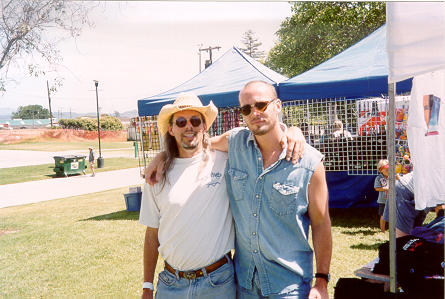
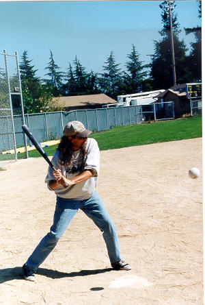
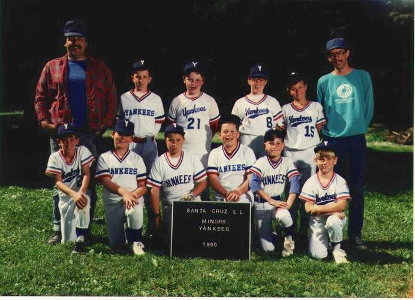
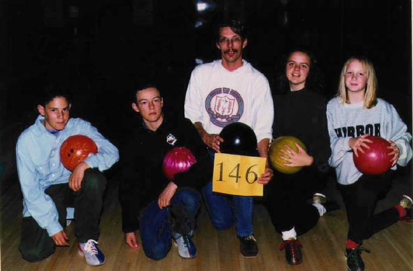

Pictures
| Party/Beach Pics | More Pics of Me | Family Pics |
| My Psychedelic Photo Art Gallery | ||
| My JPEG Folder | Pics of Burlacticus Undertow | My GIF Folder |
That's me (on the left) and Paul Thorn (to the right) in the picture below, taken at the Santa Cruz County Fairgrounds in Freedom, California where Paul and his band performed in the Texas Uprising / Swine Soiree put on by KPIG Radio. See my Paul Thorn Fan Page for more about The Man.

Taken in 1999 at an SCO company picnic, this shot shows why i was always deemed "good field, no hit" by my baseball managers.

Taken 24-Mar-1999 in the SCO cafeteria by Dan Buckler using some digital camera he bought on E-Bay at a bargain
{kind=link}
Click for larger size photo
One of the most intense experiences of my life was coaching a little league baseball team. Great kids, lousy umps, fanatical parents. Wow.

We helped out with raising money for Big Brothers, Big Sisters. One year we won the prize for most dollars raised. That's our team number, not our bowling score - we were good.

Taken in 1999 by Brian Marr, this is me with my friend and peer Dion Johnson
{kind=link}
Click for larger size photo
Party/Beach Pics and More Pics of Me and Pics of Family and Pics of Burlacticus Undertow
Anthropology | Art | Astronomy | Audio | Browsers | Entertainment | Graphics | Literature | Mathematics | Music | Miscellaneous | News | Politics | RR's Hot Links | Search | Sports | Video | Windows | X Clients

 Ronnie's Home Page or proceed to
Next Section
Ronnie's Home Page or proceed to
Next Section